This page provides a high-level overview of the structure and components of the Wi-Fi Center application.
master.py: The main entry point of
the application. It initializes the PyQt6 application, sets up
the main window, and integrates various components.
core/: Contains the core logic for
Wi-Fi operations and application features.
available_networks.py: Manages the display
and interaction with the list of scanned networks.
command_processor.py: Handles parsing and
execution of commands entered in the command bar.
inline_autocomplete.py: Implements the
autocompletion feature for the command bar.
wifi_connect.py /
wifi_disconnect.py /
wifi_networks.py: Modules likely handling
the specifics of connecting, disconnecting, and managing
network profiles using the underlying Wi-Fi library
(e.g., `pywifi`).
scanner/: Contains the separate background
Wi-Fi scanner application (see
Advanced Topics).
wifi_scanner.py: Main script for
the background scanner tray application.
wifi_scanner_cy.pyx: Cython source
file for optimized scanning logic.
setup.py: Used to build the Cython
extension.
build_executable.ps1: Script to
build a standalone `.exe` of the scanner using
PyInstaller (optional).
wifi_data.json: Output file where
the scanner writes detected network data.
helpers/: Contains utility modules
used across the application.
command_bar.py: Defines the custom command
bar widget.
output_box_animation.py: Defines the
animated output box widget.
center.py, message_box.py,
path_utils.py,
system_commands.py,
win_style_helper.py,
blurWindow.py: Various helper functions for
UI centering, message dialogs, path manipulation,
executing system commands, applying Windows styles, and
window blur effects.
docs/: Contains the documentation
source files and the documentation viewer application.
docs_app.py: The PyQt6 application that
displays this documentation.
index.html: The main HTML file for the
documentation viewer interface.
pages/: Contains the individual HTML
documentation pages (like this one).
assets/: CSS, JavaScript, and icons for the
documentation viewer.
styles/: Contains Qt Style Sheet
(QSS) files for theming the main application UI.
assets/: Contains icons and other
graphical assets for the main application UI.
requirements.txt: Lists the Python
dependencies required to run the project.
The following diagram illustrates the basic flow of information and interaction between key components:
Note: This is a simplified representation. Actual interactions might be more complex.